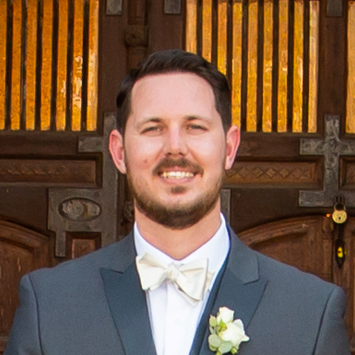

About Me
Hello, my name is Steven Green I am located in Phoenix, Arizona. I am a husband and a father of two, one girl (9 years old) and one boy (7 years old). I come from a family of construction workers. We would do most any general construction projects, but our specific trade was dry wall. You could imagine how tough it was doing construction in Phoenix, with its 115-degree weather. I have thought it was very rewarding and gave me a great work ethic. With that said it is hard to make it a long-lasting career without getting injured. About 10 years ago I started going to College part-time and received an Associates Degree in Business. With that I got my first cubical job, ahh now that feels good. Got to love working in AC. The new job I got was with Cigna Insurance, in their medical call center. From there I moved to the pharmacy department as a Pharmacy Technician. Then to the Specialty Pharmacy Rejected Claims position I’m currently filling. I have now been Cigna for 5+ years. I am now looking to further my career in the IT field. I believe with the combination of my education, office experience and hard work ethic I will be quite successful in this field. This is my portfolio of web development projects I have completed. I look forward to interviewing with you and continuing my success with your company. Please reach out with the contact information at the footer of this page and have a wonderful day.